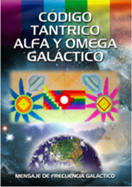
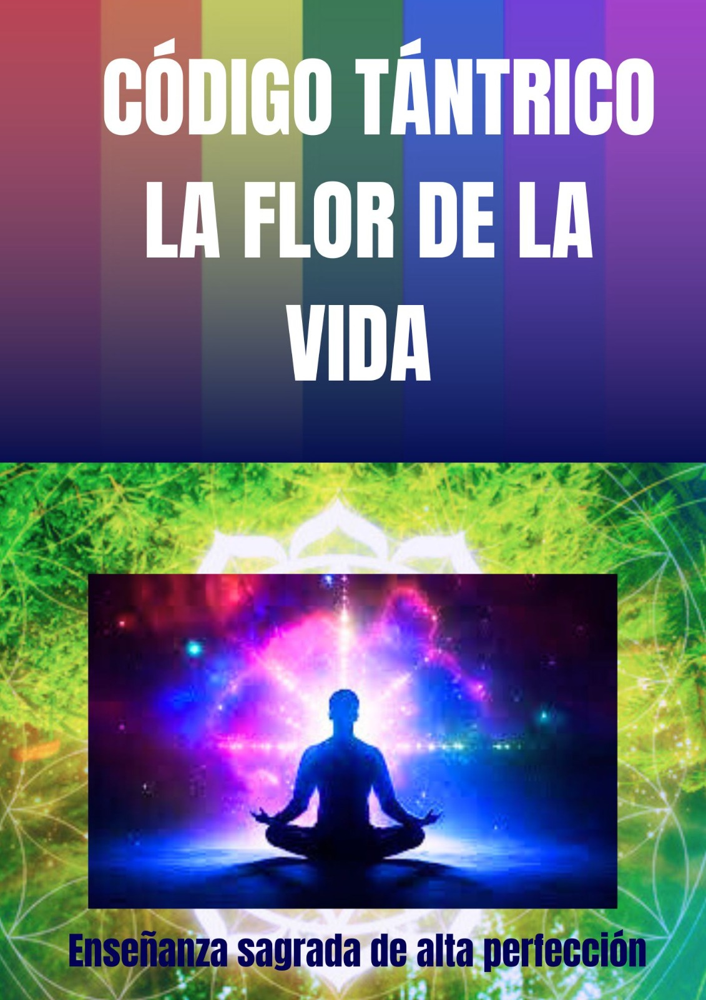
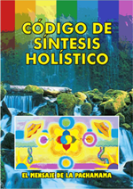
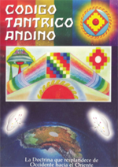
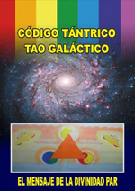
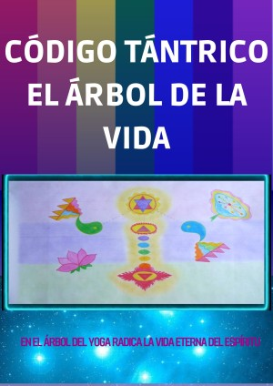
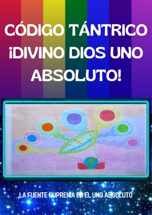
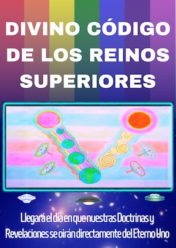
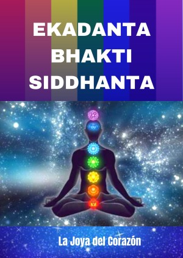

Apresentação
Os conhecimentos abordam uma grande diversidade de temas relacionados à saúde física, mental e espiritual, compreensão da existência humana, funcionamento do cérebro, corpo humano, formas de autoconhecimento, desenvolvimento de virtudes, problemas ambientais, justiça social, conhecimentos históricos e ancestrais pouco difundidos, povos originários, relações entre fé e ações cotidianas, diversas revelações de Deus no mundo, entre muitos outros assuntos.
Os conhecimentos não estão vinculados a nenhuma religião, forma de fé, ou filosofia específica e podem ser úteis a pessoas com diferentes visões de mundo. Cada pessoa pode conhecê-los e avaliá-los livremente, de acordo com suas experiências e convicções, tenha ou não tenha fé, religião, orientação espiritual, seja ateu, entre outros.


Livros
Livros em espanhol
Eka Tantra
Código de la Justicia Divina

Código Tántrico Alfa y Omega Galáctico

Código Tántrico La Flor de la Vida
Código Tántrico Celestial — Mensaje de los Divinos Padres Celestiales

Código de Síntesis Holístico

Código Tántrico Andino
Código Tántrico Universal

Código Tántrico Tao Galáctico

Código Tántrico El Árbol de la Vida

Código Tántrico Divino Dios Uno Absoluto
Código Tántrico La Flor del Corazón
Código Tántrico La Joya del Corazón I
Código Tántrico La Joya del Corazón II
Código Tántrico La Joya del Corazón III
Código Tántrico La Joya del Corazón IV

Divino Código de los Reinos Superiores

Ekadanta Bhakti Siddhanta
El Código Tupa Cielo y Tierra
Áudios
Escute os áudios
Áudios gravados. Cada livro também tem o botão “Escutar áudio”, com leitura automática feita pelo navegador de cada pessoa, mas depois vai ser uma voz de alguém.
Áudio 1
Coloque aqui o assunto do áudio.
Baixar áudioÁudio 2
Coloque aqui o assunto do áudio.
Baixar áudioÁudio 3
Coloque aqui o assunto do áudio.
Baixar áudioVídeos
Assista aos vídeos
Clique no vídeo para reproduzir.
Códigos Revelados
Vídeo 2
Vídeo 3
Entrevistas
Perguntas e respostas
Vídeos em que uma pessoa responde às perguntas enviadas.
Entrevista 1
Entrevista 2
Entrevista 3
Links
Outras páginas, espaços e links relacionados
Outros lugares onde o conteúdo também é divulgado.
Galeria
Galeria de imagens
Clique em uma imagem para ampliar.